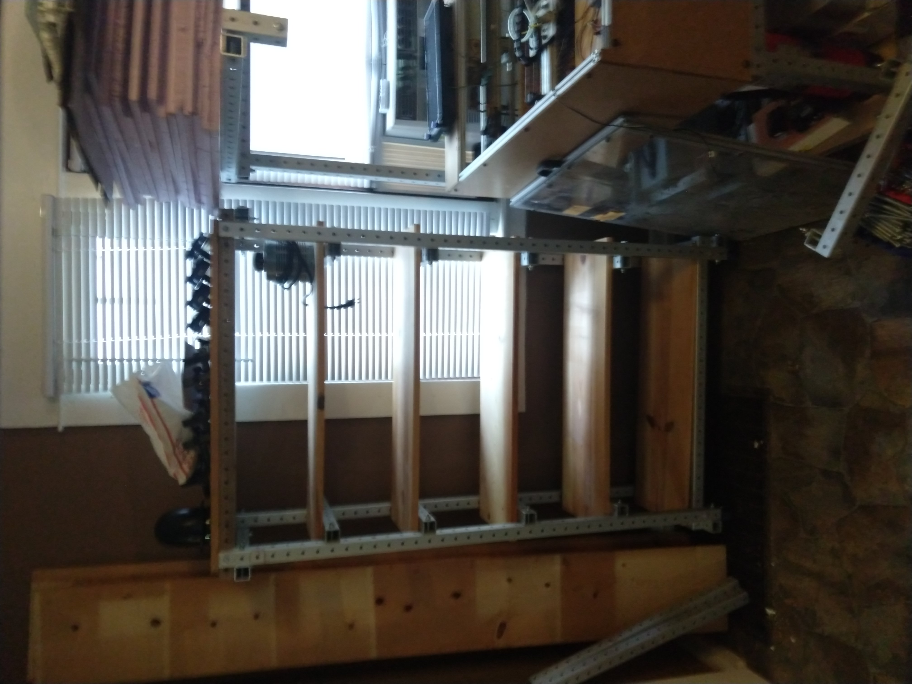
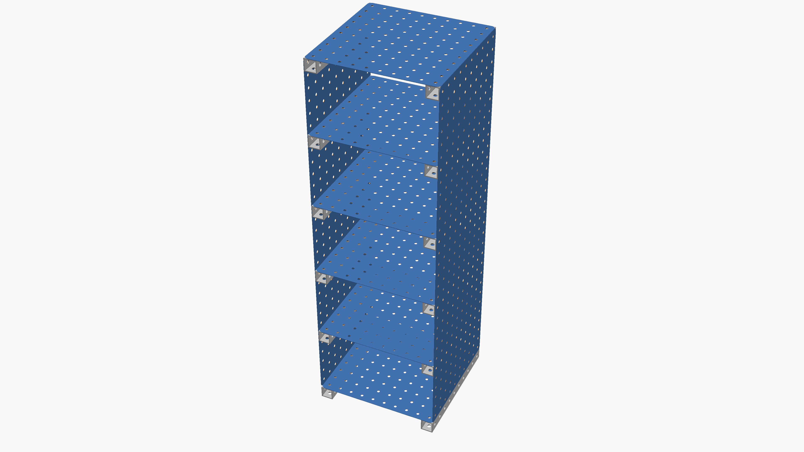
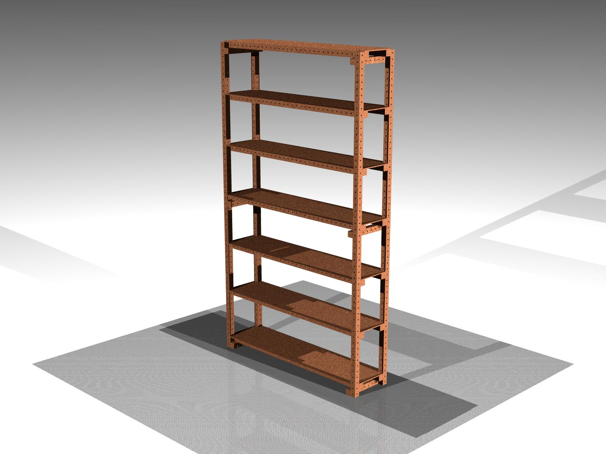
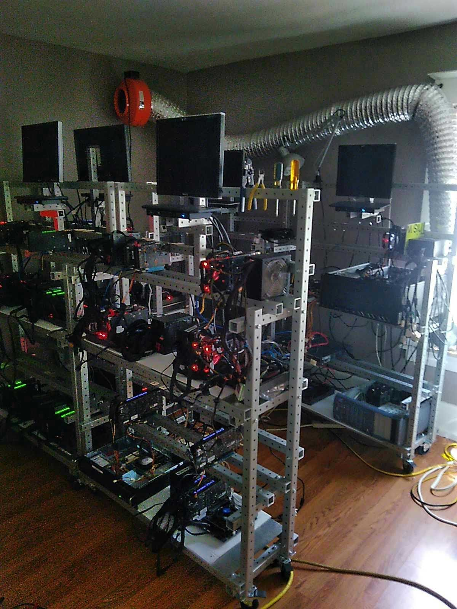
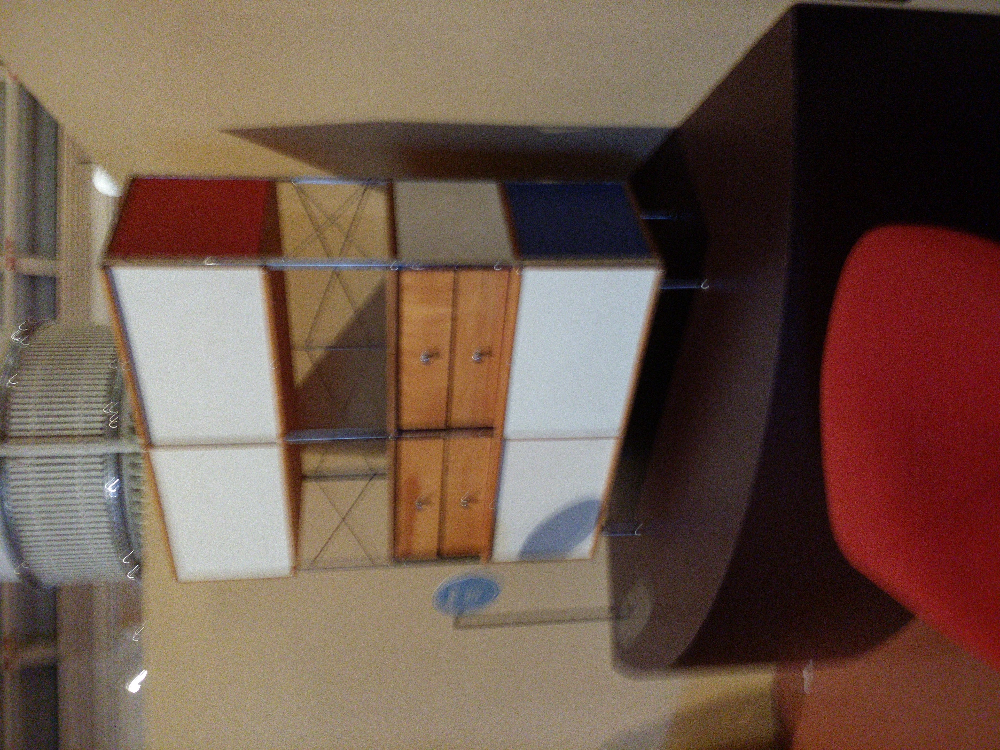
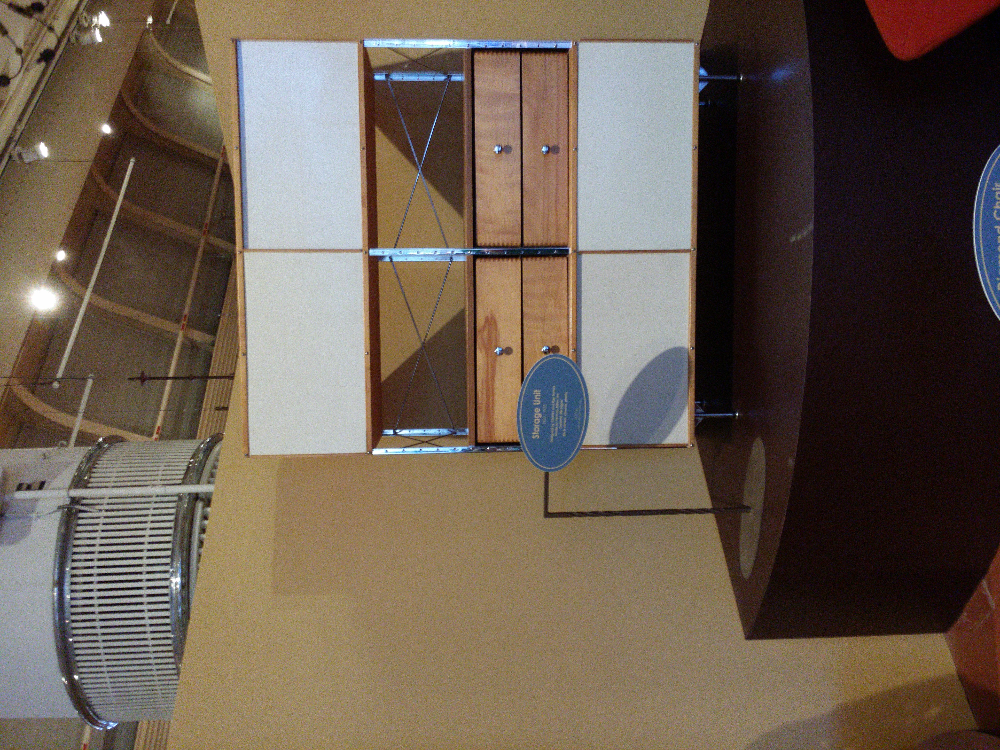
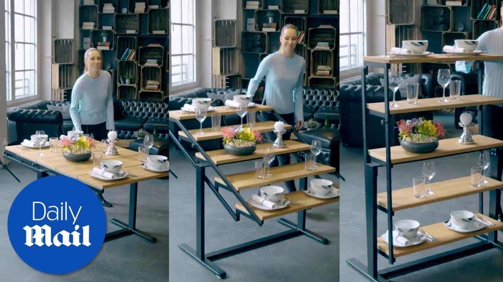
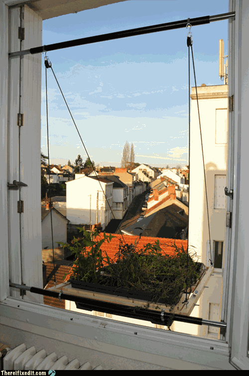

shelves revision 9361
^ Projects infobox ^^
| image | Bookshelf-thumb.png |
| designers | [[user:tim|Timothy Schmidt]] |
| date | 2021 |
| vitamins | |
| materials | |
| transformations | |
| lifecycles | |
| tools | [[wrenches|Wrenches]] |
| parts | [[frames|Frames]], [[nuts|Nuts]], [[bolts|Bolts]], [[end_caps|End caps]], [[plates|Plates]] |
| techniques | [[tri_joints|Tri joints]], [[shelf_joints|Shelf joints]] |
| git | |
| files | |
| suppliers | |
Introduction
Shelves are flat horizontal planes which are used in a home, business, store, or elsewhere to hold items that are being displayed, stored, or offered for sale. Shelves are raised off the ground and usually anchored/supported on their shorter length sides by brackets. They can also be held up by columns or pillars. A shelf is also known as a counter, ledge, mantel, or rack. Tables designed to be placed against a wall, possibly mounted, are known as console tables, and are similar to individual shelves.
A shelf can be attached to a wall or other vertical surface, be suspended from a ceiling, be a part of a free-standing frame unit, or it can be part of a piece of furniture such as a cabinet, bookcase, entertainment center, some headboards, and so on. Usually two to six shelves make up a unit, each shelf being attached perpendicularly to the vertical or diagonal supports and positioned parallel one above the other. Free-standing shelves can be accessible from either one or both longer length sides. A shelf with hidden internal brackets is termed a floating shelf. A shelf or case designed to hold books is a bookshelf.
The length of the shelf is based upon the space limitations of its siting and the amount of weight which it will be expected to hold. The vertical distance between the shelves is based upon the space limitations of the unit's siting and the height of the objects; adjustable shelving systems allow the vertical distance to be altered. The unit can be fixed or be some form of mobile shelving. The most heavy duty shelving is pallet racking. In a store, the front edge of the shelf under the object(s) held might be used to display the name, product number, pricing, and other information about the object(s).
Challenges
When using frames and plates of standard sizes, not all shelf configurations are possible. Sometimes frames occupy corners or other areas of the project which prevent shelves of standard size being placed there. See shelf joints for more information.
Approaches







